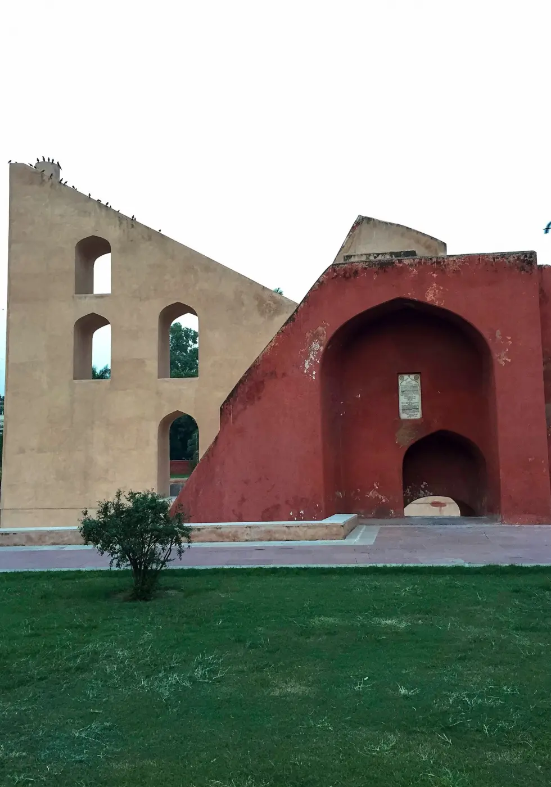
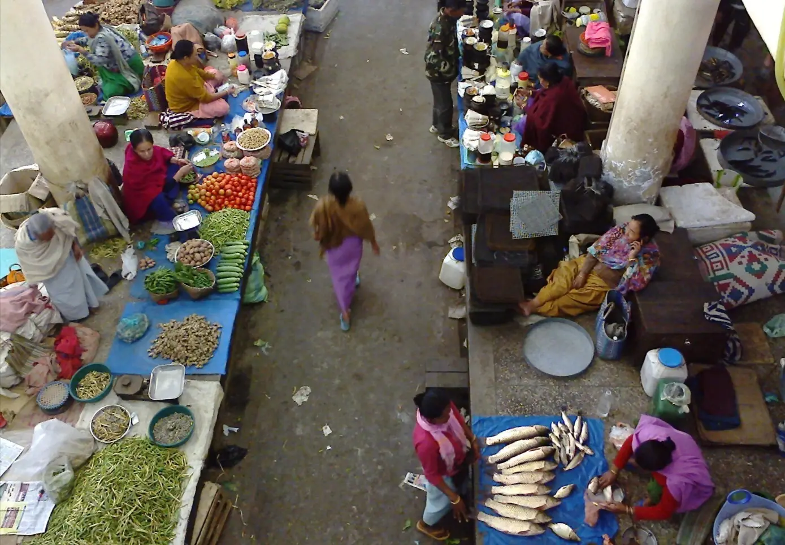
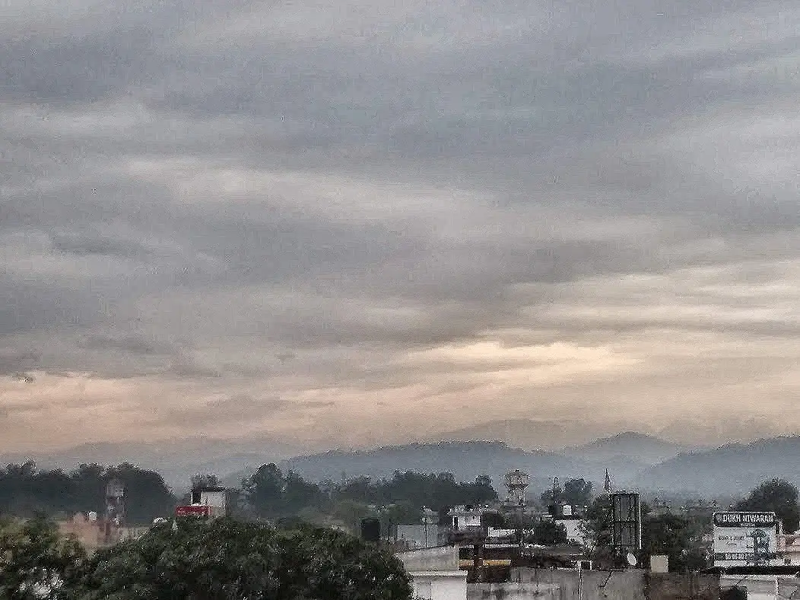
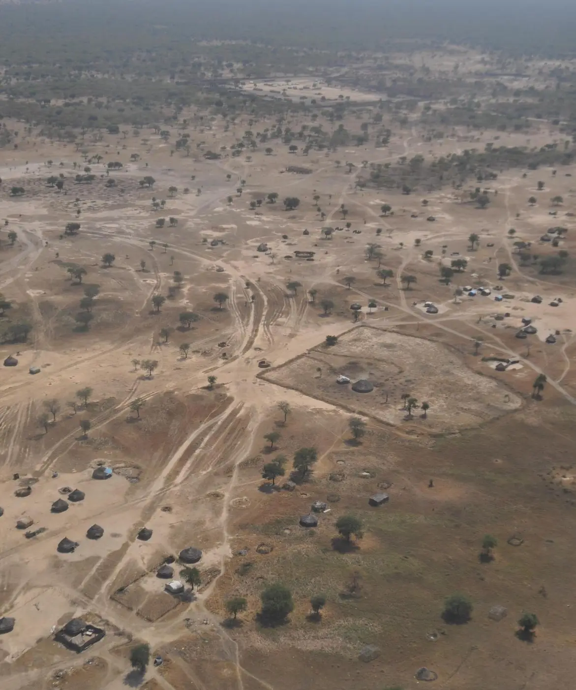
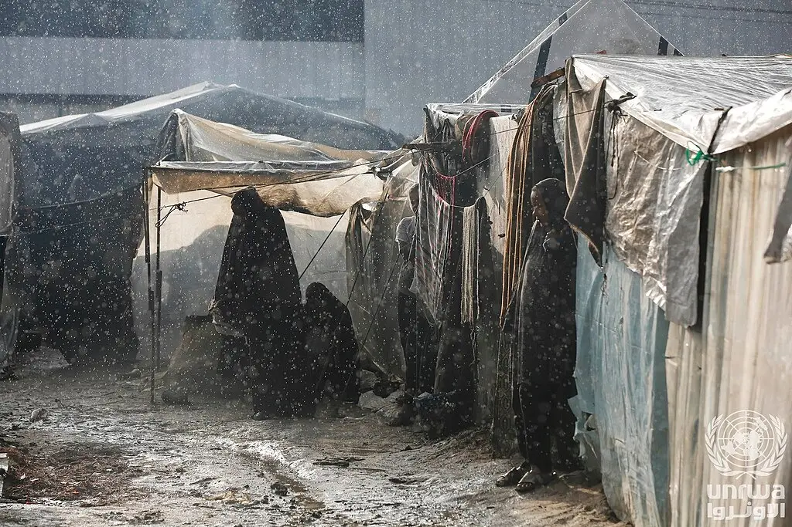
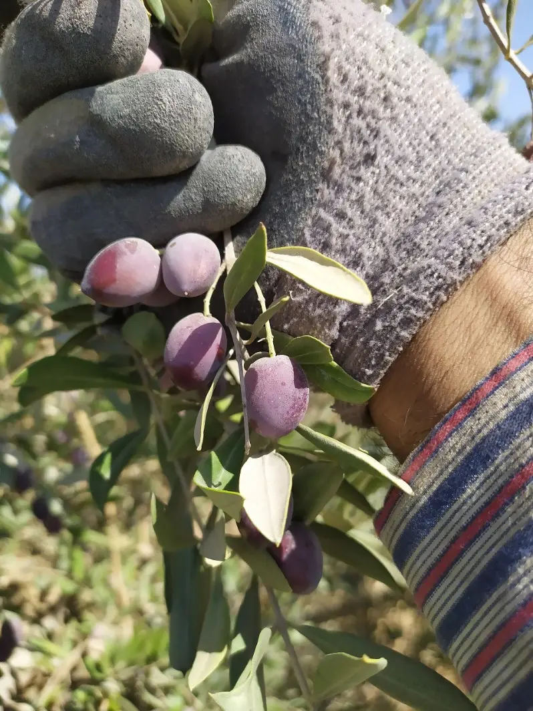
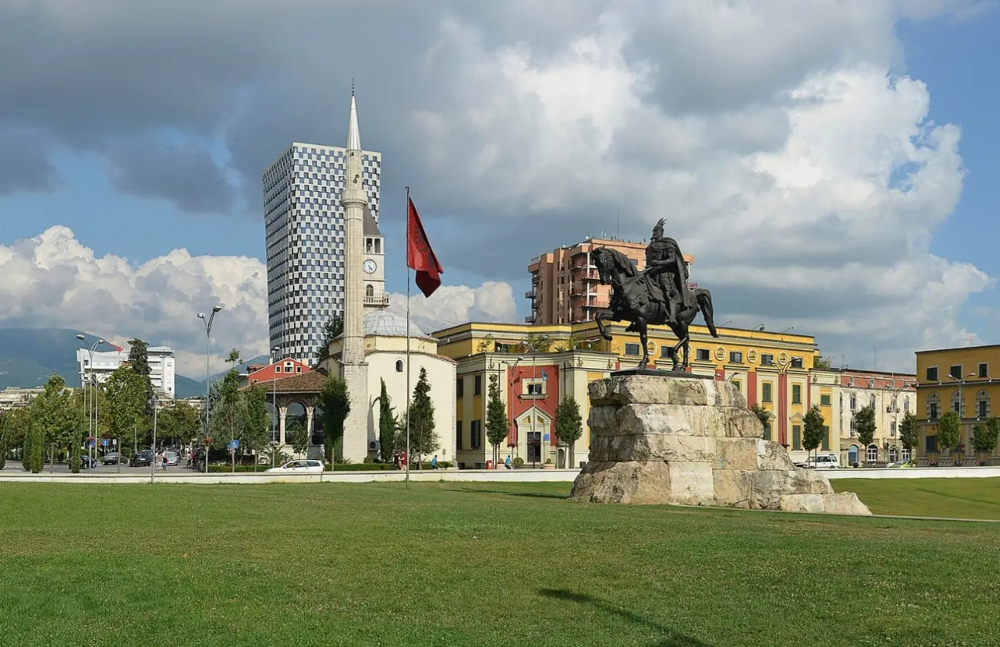
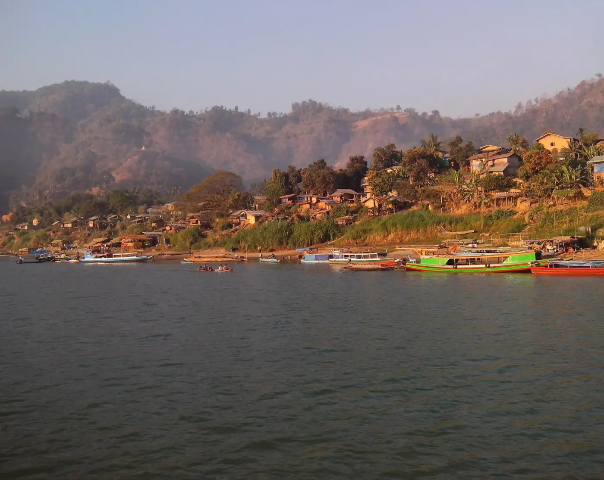

Where people's rights were at risk in the last 24 hours. Non-partisan, and every fact links to its source.

A Special Executive Magistrate on Monday extended by two days the judicial custody of Ashutosh Ranka and Saurav Das of the youth-led Cockroach Janta Party, held since 13 October for entering Jantar Mantar after it was denotified as a protest site; Delhi Police did not respond to a request for comment.
Al Jazeera · NDTV · Amnesty
Police say suspected militants shot dead three Meitei villagers collecting firewood near the Sunurok hills on Monday and injured three, with three more missing, a day after a man died in a clash between two communities in Thoubal district; the Chief Minister condemned the killings and security forces began a combing operation.
Times of India · New Indian Express
The Jammu and Kashmir and Ladakh High Court quashed the Public Safety Act detention of Romelu Ram, a 66-year-old farmer from Kathua held since 6 April, finding that the police dossier cited no criminal case and appeared copied from another person's file.
Indian Express
A drone strike on a busy market in the disputed Abyei region on Monday injured at least 19 people, the UN said, while unconfirmed reports put the death toll at 73; South Sudan summoned Sudan's ambassador in protest, and the Sudanese government had not commented.
UN News · Sudan Tribune
Hospitals said Israeli strikes killed at least two people in Gaza City and two 17-year-olds in Khan Younis on Monday; the Israeli military said it struck Hamas fighters in Gaza City and did not comment on Khan Younis.
AP via Boston Herald · UN News
UN experts urged Israel on Monday to protect Palestinian olive farmers, as OCHA reported five Palestinians killed and more than 240 injured by Israeli forces or settlers in two weeks, with 160 harvest-related settler attacks; Israeli police said they arrested 10 suspects after weekend attacks on a US photojournalist and European diplomats.
UN News · AP via Boston HeraldAuthorities imposed overnight curfews in parts of Paris, Lyon, Nice and Lille on Monday and banned gatherings across Paris from 8 pm, after weekend cost-of-living and school protests of 550,000 (official count) to 800,000 (organisers) ended in looting and more than 2,330 people taken into custody.
Al Jazeera · AP
Police used tear gas and water cannon against thousands of student-led protesters in Tirana on Sunday, the sixth day of unrest, and masked people set a police station on fire; the Prime Minister said 295 people have been injured and backed the police against claims of excessive force.
Balkan Insight
Narinjara reports that a military airstrike on a busy cargo site in the Chaungson area of Paletwa Township, Chin State, killed six civilians and injured several others on Sunday morning, in territory held by the Arakan Army.
NarinjaraResistance Daily, Tue 20 Oct • Manipur: Four killed in two days in Manipur • Abyei: Drone strike hits busy Abyei market • Gaza: Strikes kill four in Gaza, including two teens • Myanmar: Airstrike kills six at Paletwa cargo site Sources for every fact: see the full edition.


_-_by_Pudelek.jpg){kind=link}